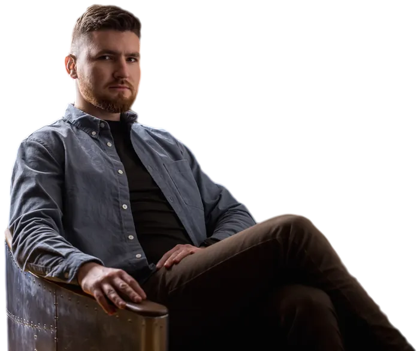

Crisis and starting over
War, displacement, sudden loss, a move that wasn’t really a choice. First we get you steady, then we work out the next step.
Online psychological counselling
For adults going through a crisis, a conflict, pressure at work or a fresh start in a new country. One to one, at your own pace, wherever you are.

What I help with
I work with adults, one to one. If what you’re facing isn’t listed, write anyway, and I’ll tell you whether I’m the right person.
War, displacement, sudden loss, a move that wasn’t really a choice. First we get you steady, then we work out the next step.
With a partner, family, a colleague or a manager. What the conflict is really about, and how to say what needs saying.
Deadlines, responsibility, holding everything together. We work on limits, recovery and what you actually want from your work.
Parents far away and getting older, children growing up between two cultures, roles that shift after a move.
I’m Sviatoslav, Sviat for short. I grew up in Ukraine, studied psychology there for seven years, and have lived in Copenhagen since 2022.
How it works
Pick a time that suits you, or send me a few lines. You don’t have to explain everything.
In twenty minutes we see whether I’m the right person for what you’re dealing with. If not, I’ll suggest where to turn.
Fifty minutes by video, wherever you are, at a rhythm we agree together.
My approach
I see a crisis as a transition: the uncertain stretch between how life was and how it will be. My part is to help your own way through it take shape, not to hand you a ready-made answer.
With some people I’m calm and steady; with others I’m more direct, even provocative, because that’s what gets things moving. Either way I’m on your side: we start with what’s pressing, get clear on what you want to change, and work toward it at a pace that’s yours.
No. You can book a first call or write to me directly.
Yes. That is what the first call is for: to talk it through, with no commitment.
Yes. Sessions are online, so you can join from anywhere, as long as we find a time that suits both time zones.
First call
The first call is twenty minutes by video, to see whether I’m the right person for what you’re dealing with.